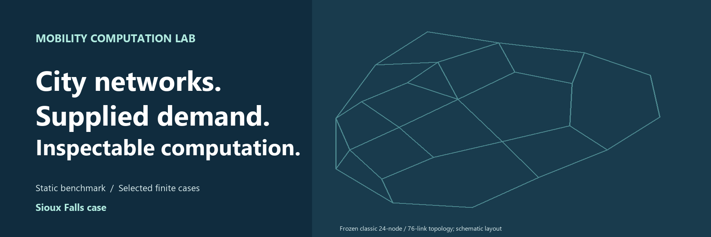
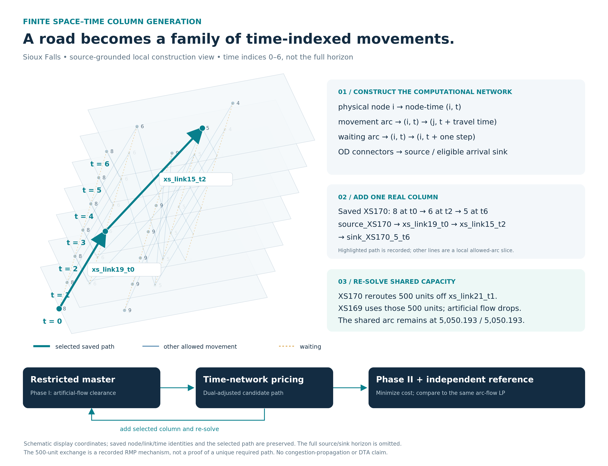
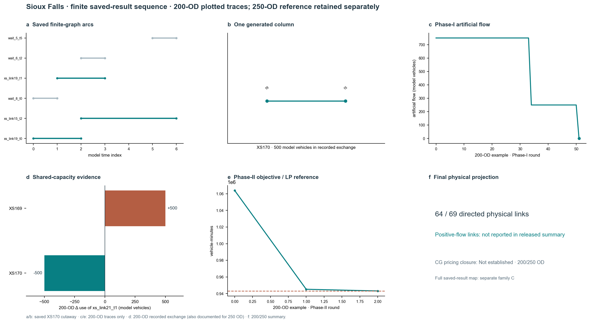
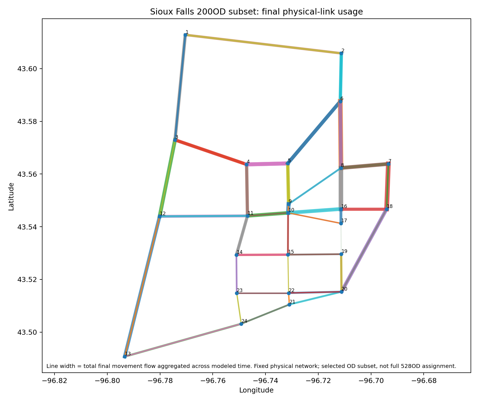
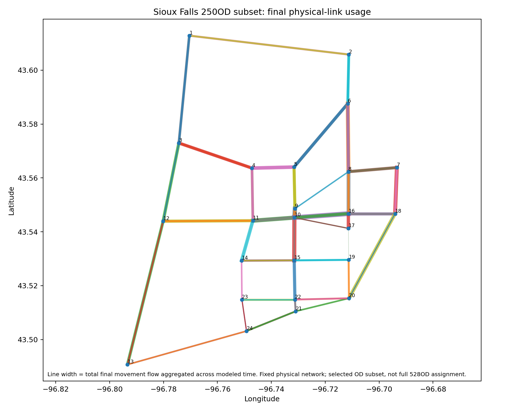

Sioux Falls case · static assignment and historical space–time CG
The common nine-module order exposes the original case evidence directly. Model branches, instance sizes and evidence grades remain distinct.

Case-entry cover; saved results, scope and sources are detailed below.
Role in the repository
Classical supplied-vehicle-OD static benchmark and historical 200/250-OD finite benchmarks, not a population/GPS case.
Sioux Falls is a classical benchmark entry in the same network-computation framework, not a new present-day real-city GPS/four-stage dataset. Its static native Diagnostic L3 instance has 24 nodes, 76 directed links, 528 positive OD records, 2,218 paths and rank 50. The historical 200OD and 250OD time-expanded CG cases are separate selected-link/horizon instances. Return to the project homepage.
Supplied classic benchmark inputs, historical FW, executed native L3 profiles and finite space–time CG with Phase-I/II evidence. It does not execute modern city generation/distribution/mode choice or GPS feedback.
Space–time construction, clearance and shared-capacity mechanism →

Scope and statistics
Static: 24 nodes, 76 links, 528 positive OD records. Selected finite runs: 24 nodes, 64/69 links and 200/250 demands.
| Metric | Accepted instance |
|---|---|
| Static benchmark | 24 nodes; 76 directed links; 528 OD records |
| Finite historical 200-OD case | 24 nodes; 64 selected links; 200 ODs |
| Finite historical 250-OD case | 24 nodes; 69 selected links; 250 ODs |
GMNS, zones, and source evidence
Frozen benchmark/source identity and selected finite subgraphs have distinct scopes.
The classic 76-link topology and OD table are frozen with the native representation. Their IDs and path/OD/link records are explicit; no Boston H3 zones, GTFS, GPS traces or present-day physical street tiles are imputed to this benchmark. The two CG diagrams below are schematic flows of their different selected-link instances.
Demand, transit, and observations
Population, households, transit and GPS are Not part of this benchmark; vehicle OD is supplied.
Stage 01 · Trip generation — not estimated
OD demand is provided exogenously for the classic benchmark. Trip-production rates were not estimated in this case.
Stage 02 · Trip distribution — supplied OD
The static 528-record OD table is a supplied input, not a gravity/IPF result. Historical 200OD and 250OD CG instances select different demand subsets and links.
Stage 03 · Mode choice — not estimated
No traveller mode-choice model was estimated for the classic Sioux assignment benchmark. Its fixed vehicle demand should not be confused with Boston's conditional DA/S2/S3/TW study.
No real-city GPS/GTFS observations or Boston-style service-feedback workflow are included in the classic Sioux instance. The benchmark is algorithmic, not an observed urban traffic panel.
Static assignment
Historical FW and official TAPLab registered-adapter Algorithm B are static; native L3 has its own numerical evidence.
The historical static FW result is actually executed: saved approximate Beckmann objective 4,236,715.140437842, 24 nodes, 76 links, 528 OD records and a reported 0.236154949% fixed-flow gap under its own denominator. Its runtime OD-file hash and path disaggregation were not retained; therefore it is not asserted to be an exact matching reference for the native frozen input.
The corrected native Diagnostic L3 method has accepted outer-04 results on the static 76-link instance. It keeps the rank-50 basis, 535 major and 1,683 minor paths, 585 reduced path coordinates and 661 total native variables, including the explicit link flows.
| Native configuration | Gamma | Original Beckmann component F | Max OD residual | Full-network relative cost gap | Meaning |
|---|---|---|---|---|---|
| A_REG001 · outer 04 | 0.01 | 4,325,864.946597109 | 5.548833712509804e-7 | 8.167461% | Regularized diagnostic, numerically accepted |
| B_BECKMANN · outer 04 | 0 | 4,289,674.484214505 | 6.957361051718181e-7 | 4.381867% | Unregularized numerical candidate, not full-network UE |
Both have zero negative path-flow mass and passed recorded original-space numerical tests. Their nonzero full-network gaps remain visible; a passing numerical-feasibility gate is not an equilibrium or empirical-validation certificate. Gamma=0.01 adds a reference-centred term, so the two F values are not a shared-objective leaderboard. The source and effective zero-link-bound adapter are released, but native portability has not been retested in this publication task.
Complementary saved-result views: B_BECKMANN link-flow distribution and network flow/support; A_REG001 L3 distribution and network reconstruction residual. These are schematic topology views, not georeferenced city maps. The L3 difference is its own path-aggregate versus explicit-flow residual, not a FW comparison. Figure source hashes.


The separate official tap-b Algorithm B classic static result passes independent UE checks on 24 nodes, 76 links and 528 positive ODs. The pinned official TAPLab registered adapter and direct callable reproduce its accepted physical-link flows exactly; taplab verify certified the standard output. This is a static BPR/Beckmann result, not a finite space–time CG or distributed-capacity result.
Finite time-expanded algorithms
CG, Lagrangian and ADMM address bounded finite instances.

Current source-matched R2 layout; 200-OD plotted traces and 250-OD evidence remain distinct. SVG · Source and exact input hashes · Historical R1 layout.


Representation-level figures and full finite case.
The historical finite space–time CG results solve a different fixed-cost, hard-capacity linear formulation with a reference LP. They belong inside this case, not in the static native comparison:
The same bounded 200/250-OD selected-instance family now has separate accepted Lagrangian R2 evidence and ADMM R2_S evidence. Lagrangian R2 certifies 0.0746% / 0.3177% duality gaps after separate feasible restricted-path recovery. ADMM R2_S passes independent conservation/capacity/KKT/projection gates at 85 / 101 iterations, with own-LP relative objective differences 6.30e-6 / 7.16e-6. Earlier ADMM R1 figures remain available as historical records. These do not replace CG's certificate status or establish a full 528-OD result.
| Historical CG experiment | Selected links | OD pairs | Final columns | Objective | Evidence |
|---|---|---|---|---|---|
| 200OD | 64 | 200 | 446 | 943,155.589771 | Saved final flow and Phase-I/II figures |
| 250OD | 69 | 250 | 567 | 1,521,090.836620 | Saved final flow and Phase-I/II figures |


Independent verification
Both historical CG runs show reference-objective agreement with their own arc-flow LP; independent full-DAG pricing closure is Not established.
City-specific evidence and limits
The XS170/XS169 shared-capacity event and both selected-OD scales remain in the complete evidence below.
Reproduction
Inspect the retained experiments and reproduction section below.
python -B tools/mcl_results.py list --case sioux-falls
python -B tools/mcl_results.py verify-saved --run sioux-native-l3-a-reg001-outer04
python -B tools/mcl_results.py verify-saved --run sioux-native-l3-b-beckmann-outer04
The saved inspector reconstructs path-to-OD/link flows and the original Beckmann component without solving. Selected frozen data and checks and optional native staging instructions are separate from the historical CG implementation. No new Sioux run was made for this publication.
ADMM R2_S matched Sioux figure families are saved-result visualizations of a separate finite shared-capacity method; no solver was rerun for their publication.